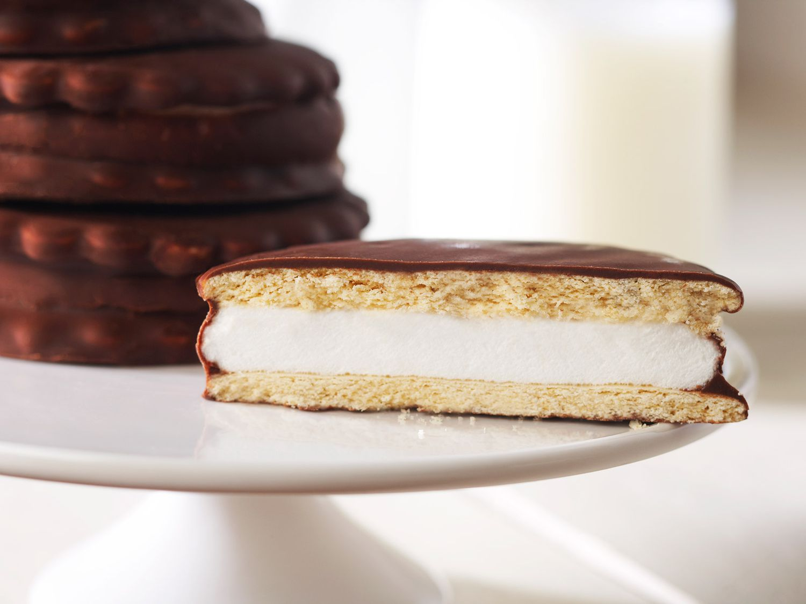

About MoonPies
MoonPies were created in 1917 at a bakery in Chattanooga, TN. Earl Mitchell is credited with the invention of MoonPies but there's a couple of others who are to thank. Eric Mitchell was a traveling salesman who encountered a coal miner that asked for a snack "as big as the moon." Mitchell reported this request back to the bakery who fulfilled his wishes and thus the MoonPie was born.
